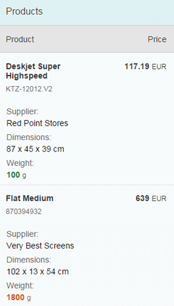

Configuring Responsive Behavior of a Table
OpenUI5 supports column-based and row-based solutions to support flexible and clearly arranged tables.
One of the biggest challenges in responsive web design (RWD) is presenting tabular data. Large tables containing lots of columns simply don't fit on smaller screens and there is no easy way to reformat the table content with CSS and media queries for an acceptable visual display. To address this, our framework offers a column-based solution (column hiding) and row-based solution (pop-ins) for displaying tables responsively and both options are applicable at the same time. This may sound rather complicated, so let's look at an example.
Say we want to build this nice table to display on a desktop:

On mobile devices, we know that we won't have enough space to show all these columns, so we need to ask ourselves which columns are most important. Let's say:
- Product and Price are most important. So they should never be hidden.
- Supplier, Dimensions and Weight are not particularly important, so we'll only show them as pop-ins.
If we apply these decisions we just made, our mobile devices should now look like this:

You can control the responsive table design using the API of sap.m.Column. This control provides two properties to handle column hiding and pop-in.
- minScreenWidth: This value defines the break point for the column visibility. For instance: An Apple iPhone 5 device has 568px x 320px resolution (dip/device-width), so if we assign 400px (or 25em based on 16px), then this column will not be visible for portrait mode (width 320px) but will be visible for landscape mode (width 568px). Instead of specifying in px or em, you can also assign one of the predefined sap.m.ScreenSize types like Tablet (for 600px) or Desktop (for 1024px). The default value for this property is an empty string, meaning this column will always be visible.
- demandPopin: Depending on your minScreenWidth, the column can be hidden in different screen sizes. Setting this property to true shows this column as a pop-in instead of hiding it. The default value is false.
And that's it! All you need to know are these two variables for responsive tables. So if we go back to our original example for a minute:
- Name and Status columns should never be hidden. This is the default behavior of a column, so let's just let the default values (minScreenWidth : "" and demandPopin: false) do their job.
- Model Number column should be hidden for small devices, so our break point is minScreenWidth : "Small" and demandPopin : false (default value).
- Quantity, Unit Price and Final Price columns should go into our pop-in, so our break point is still minScreenWidth : "Small" but now with demandPopin : true to show the column in a pop-in.
- For example: On tablets and wider devices we'll have more space available, so we can show the Final Price column, but we'll revert to a pop-in for smaller devices. So here our break point should be minScreenWidth : "Tablet" and demandPopin : true.
Please note that in order to have a valid table design, at least one column should always be visible and should not go to the pop-in.